บทบาทของบอร์ดไมโครคอนโทรลเลอร์ Arduino Uno / Nano (8-bit MCU) ต่อการเรียนรู้ระบบสมองกลฝังตัวในปัจจุบัน#
Keywords: AVR, ATmega328P, Arduino Uno, Arduino Nano, Bare-metal C Programming, AVR Assembly, Wokwi Simulator, FreeRTOS for Arduino
- บทบาทของบอร์ด Arduino 8-bit MCU
- แพลตฟอร์มสำหรับการเรียนรู้ระบบคอมพิวเตอร์ฝังตัว
- ระดับของการเขียนโค้ดสำหรับไมโครคอนโทรลเลอร์
- ตัวอย่างโค้ด: LED Blink
- ความสำคัญของซอฟต์แวร์ AVR GCC Toolchain
- การจำลองการทำงานและการดีบัก
- กรณีศึกษา: WS2812B RGB LED
- การจำลองการทำงานแบบเสมือนจริงด้วย Wokwi Simulator + VS Code IDE
- ข้อจำกัดของ Arduino API
- ตัวอย่างการเขียนโค้ดโดยใช้ FreeRTOS
▷ บทบาทของบอร์ด Arduino 8-bit MCU#
บอร์ดไมโครคอนโทรลเลอร์อย่าง Arduino Uno และ Arduino Nano ที่ใช้ชิป Atmel ATmega328P รวมถึงบอร์ด Arduino Mega 2560 ที่ใช้ชิป ATmega2560 มีบทบาทสำคัญอย่างยิ่งในการทำให้แพลตฟอร์ม Arduino เป็นที่รู้จักอย่างแพร่หลาย และช่วยลดอุปสรรคในการเริ่มต้นพัฒนา Embedded Systems สำหรับผู้เรียนและผู้เริ่มต้น
จุดเด่นของ Arduino ในยุคเริ่มต้น คือ การซ่อนความซับซ้อนของฮาร์ดแวร์และเครื่องมือพัฒนาไว้เบื้องหลัง และมีการพัฒนา Arduino API ซึ่งทำให้ผู้ใช้งานสามารถเขียนโปรแกรมด้วยภาษา C/C++ ในระดับที่เข้าใจง่าย ใช้เวลาเรียนรู้ไม่นาน และมีต้นทุนต่ำเมื่อเทียบกับแพลตฟอร์มไมโครคอนโทรลเลอร์แบบดั้งเดิม
อย่างไรก็ตาม หากมองในภาพรวมของเทคโนโลยีปัจจุบัน จะเห็นได้ว่าบอร์ด Arduino ที่ใช้ไมโครคอนโทรลเลอร์แบบ 8 บิต เริ่มมีบทบาทลดลง เมื่อเทียบกับบอร์ดรุ่นใหม่ที่ใช้ไมโครคอนโทรลเลอร์แบบ 32 บิต ซึ่งมีประสิทธิภาพสูงกว่า รองรับหน่วยความจำมากกว่า และมีอุปกรณ์ต่อพ่วง (Peripheral) ที่ซับซ้อนกว่า
ด้วยเหตุนี้ หากพิจารณาในมุมของการนำไปใช้งานจริงเชิงอุตสาหกรรม บอร์ด Arduino 8-bit จึงมักถูกจัดอยู่ในกลุ่มเทคโนโลยีเชิง legacy ในยุคปัจจุบัน แต่ยังมีคุณค่าในบริบทของการเรียนรู้ระดับเริ่มต้น
▷ แพลตฟอร์มสำหรับการเรียนรู้ระบบคอมพิวเตอร์ฝังตัว#
แม้ว่าการนำไปประยุกต์ใช้งานมีแนวโน้มลดลง แต่บอร์ด Arduino Uno / Nano ยังคงเหมาะสมสำหรับการใช้เป็น “โมเดลอ้างอิง” เพื่อศึกษารูปแบบการเขียนโค้ด Arduino Sketch รวมถึงหลักการทำงานของบอร์ดไมโครคอนโทรลเลอร์ ขนาด 8 บิต และสถาปัตยกรรมของซีพียู (CPU) ภายในชิปไมโครคอนโทรลเลอร์
ชิป ATmega328P บนบอร์ด Arduino Uno / Nano เป็นตัวอย่างของซีพียูแบบ RISC (Reduced Instruction Set Computer) ที่มีโครงสร้างไม่ซับซ้อน และมีไปป์ไลน์ (Pipeline) ที่ไม่ซับซ้อนในการทำคำสั่ง (เป็นแบบ 2-stage Pipeline คือ Instruction Fetch และ Instruction Execute) ทำให้สามารถนำมาใช้เป็นกรณีศึกษา เพื่ออธิบายการทำงานของซีพียูได้อย่างเป็นรูปธรรม
ผู้เรียนสามารถศึกษาประเด็นต่าง ๆ ได้ เช่น
- การทำงานของรีจิสเตอร์ภายในซีพียู
- ผังของหน่วยความจำภายในที่มีการแบ่งแยกระหว่าง Data Memory และ Program Memory ตามสถาปัตยกรรมแบบ Modified Harvard Architecture
- รูปแบบการเข้าถึงหน่วยความจำประเภท SRAM และ Flash
- การทำงานของคำสั่งของซีพียู (Instruction execution)
- ความสัมพันธ์ระหว่างซอฟต์แวร์ระดับสูงกับฮาร์ดแวร์ระดับล่าง
สิ่งสำคัญคือ ชิป AVR อย่างเช่น ATmega328P เปิดโอกาสให้ผู้เรียนสามารถเขียนโปรแกรมได้หลายระดับ (Multi-Level Programming) ตั้งแต่ระดับ API ไปจนถึงระดับคำสั่งของซีพียูโดยตรง
▷ ระดับของการเขียนโค้ดสำหรับไมโครคอนโทรลเลอร์#
รูปแบบการเรียนรู้และการเขียนโค้ดเพื่อใช้งานกับบอร์ด Arduino Uno / Nano สามารถจำแนกตามระดับความลึก และความรู้ความเข้าใจการทำงานระดับล่างของฮาร์ดแวร์ ได้ดังนี้
1) ระดับ Arduino API (C/C++)
- เป็นการเขียนโค้ดในภาษา C/C++ แต่ใช้คำสั่งต่าง ๆ ของ Arduino API
- ผู้เรียนสามารถเลือกใช้ IDE (Integrated Development Environment) อย่างเช่น Arduino IDE หรือ VS Code IDE ร่วมกับ PlatformIO หรือเครื่องมืออื่น ๆ เพื่อเรียนรู้โครงสร้างโปรแกรม รวมถึงการใช้ไลบรารี (Arduino Libraries) ซึ่งทำให้ง่ายและสะดวกในการเขียนโค้ด
2) ระดับ Bare-metal C
- เป็นการเขียนโปรแกรมภาษา C โดยเข้าถึงรีจิสเตอร์ของ AVR โดยตรง เพื่อควบคุมอุปกรณ์ภายใน เช่น GPIO, Timer, UART, SPI และ I2C โดยไม่พึ่ง Arduino API
- โดยทั่วไป มีการใช้ AVR GCC Toolchain
สำหรับการคอมไพล์โค้ด และ AVR-LibC
ซึ่งเป็นไลบรารีสำหรับการเขียนโค้ดภาษา C ได้ด้วย
- ดาวน์โหลด AVR GCC Compiler สำหรับ Windows / Linux / Mac OS
- ในส่วนการอัปโหลดไฟล์ .hex ที่ได้จากการขั้นตอนคอมไพล์โค้ดภาษา C ก็จะใช้โปรแกรมที่มีชื่อว่า AVRDude
- บอร์ด Arduino Uno / Nano สามารถใช้งานร่วมกับ AVRDude เนื่องจากสามารถใช้ Arduino Bootloader ที่ได้มีการติดตั้งไว้ในชิป เพื่อการอัปโหลดไฟล์ (.hex) และไม่จำเป็นต้องมีอุปกรณ์ภายนอก (External Hardware Programmer)
- นอกจากนั้น ยังมีเครื่องมือที่เป็นซอฟต์แวร์จากบริษัทผู้ผลิต ได้แก่ Microchip Studio for AVR หรือ MPLAB X IDE
3) ระดับ AVR Assembly
- เป็นการเขียนโปรแกรมด้วยภาษา Assembly ทั้งหมด หรือผสมผสานกับภาษา C (เช่น Inline Assembly) เพื่อควบคุมการทำงานของซีพียูในระดับคำสั่ง (Instruction Level)
- เหมาะสำหรับการศึกษาเชิงลึกด้านสถาปัตยกรรมซีพียู และการปรับแต่งประสิทธิภาพของโค้ดในระดับรอบสัญญาณนาฬิกา
- การเขียนโค้ด AVR Assembly สามารถใช้เครื่องมือ AVR GCC Toolchain ในการคอมไพล์โค้ด
AVR Assembly เพื่อสร้างไฟล์ .hex แต่ก็มีเครื่องมืออื่นให้เลือกใช้ได้ เช่น
- AVRA for Linux ซึ่งเป็น Open Source AVR Assembler ที่ออกแบบมาเฉพาะสำหรับไมโครคอนโทรลเลอร์ AVR
AVRASM2 for Windowsซึ่งเป็นโปรแกรม Assembler อย่างเป็นทางการของบริษัท Atmel
การเขียนโค้ดด้วย Arduino API ใช้วิธีการอ้างอิงขา Arduino Pin ตามรูปแบบที่ Arduino API กำหนดไว้ แต่ถ้าเขียนโค้ดแบบ Bare-metal C จะต้องอ้างอิงจากขาของชิป (MCU Pin)
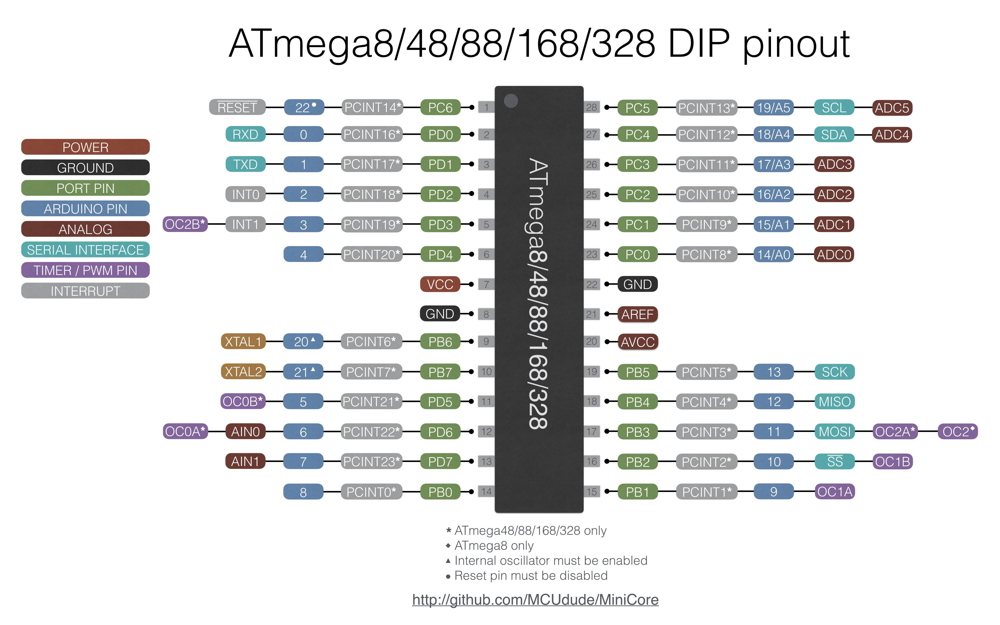
รูป: การแสดงตำแหน่งขาและความเชื่อมโยงระหว่าง Arduino Pin กับ MCU Pin
▷ ตัวอย่างโค้ด: LED Blink#
ถัดไปเป็นตัวอย่างโค้ดในไฟล์ main.c แสดงให้เห็นรูปแบบการเขียนโค้ดแบบ Bare-metal C
ที่ทำให้ LED บนบอร์ด Arduino Uno / Nano กระพริบด้วยอัตราคงที่
ในตำแหน่งขา Arduino D13 Pin หรือ PB5 Pin ของชิป ATmega328P
ในโค้ด มีตัวอย่างการเข้าถึงรีจิสเตอร์ของ ATmega328P เพื่อเขียนหรืออ่านค่า เช่น การใช้รีจิสเตอร์
DDRB และ PORTB เป็นต้น นอกจากนั้นแล้วยังมีการเรียกใช้ฟังก์ชัน เช่น _delay_ms() เพื่อหน่วงเวลาไว้
ตามระยะเวลาที่ต้องการ ก่อนทำคำสั่งถัดไป ฟังก์ชันนี้เป็นส่วนหนึ่งของไลบรารี AVR LibC
// Define the CPU clock frequency as 16 MHz.
// The AVR fuse bits must be configured to use an external 16 MHz crystal.
#ifndef F_CPU
#define F_CPU 16000000UL
#endif
#include <avr/io.h> // Provides definitions for I/O registers and bit names
#include <util/delay.h> // for _delay_ms()
#define LED_PIN 5
#define LED_PORT PORTB
#define LED_DDR DDRB
// Software delay
void sw_delay(uint8_t n) {
for (uint8_t i = 0; i < n; i++) {
for (uint16_t j = 0; j < 16000-1; j++) {
asm volatile ("nop");
}
}
}
int main(void) {
// Configure PB5 as an output pin.
// DDRB is the Data Direction Register for PORTB.
// Writing '1' to bit PB5 sets the corresponding pin as output.
LED_DDR |= (1 << LED_PIN); // configure PB5 as output pin
LED_PORT &= ~(1 << LED_PIN); // output LOW
while (1) {
PORTB ^= (1 << PB5); // Toggle PB5 pin
// Delay for approximately 500 milliseconds (0.5 seconds).
_delay_ms(500);
// sw_delay(100);
}
// This return statement is never reached,
// but is included to satisfy the C standard.
return 0;
}
ในโค้ดตัวอย่าง มีการสร้างฟังก์ชัน sw_delay() เพื่อใช้หน่วงเวลาได้เช่นกัน
และแสดงให้เห็นตัวอย่างการใช้คำสั่ง nop ของ AVR Assembly
แบบ Inline ในโค้ดภาษา C มีการทำคำสั่งวนลูปซ้อน (Nested Loop) เพื่อหน่วงเวลา
หากคอมไพล์โค้ดด้วย Arduino IDE และทดสอบกับฮาร์ดแวร์จริง จะพบว่า การทำงานของลูปใน (Inner Loop) จำนวน 16000 รอบ จะใช้เวลาประมาณ 5 ms (จากการวัดสัญญาณ)
เมื่อกำหนดให้ F_CPU = 16 MHz ซึ่งมีคาบเวลา 62.5 ns ต่อหนึ่งไซเคิล (Clock Cycle)
จะได้ว่า การทำงานของลูปใน ใช้เวลา 5 ms / (16000 cycles x 62.5 ns) = 5 cycles
โดยหนึ่งรอบของลูปไม่ได้มีเพียงคำสั่ง nop เท่านั้น แต่ยังรวมถึงคำสั่งควบคุมลูป เช่น การลดค่าตัวนับ
การตรวจสอบเงื่อนข และการกระโดดกลับของลูป เพื่อทำขั้นตอนซ้ำ
ถ้าลองทำคำสั่งต่อไปนี้
1) avr-gcc -mmcu=atmega328p -Os main.c -o main.elf เพื่อคอมไพล์โค้ด main.c ให้เป็น main.elf
โดยใช้ -Os คือ ต้องการทำให้โค้ดมีขนาดเล็ก หรือสั้นที่สุดที่ยังถูกต้อง แต่ไม่ได้เร็วที่สุด
2) avr-objdump -d main.elf เพื่อดูโค้ด AVR Assembly
เอาต์พุตบางส่วน มีตัวอย่างดังนี้ (ตัดมาเฉพาะส่วนที่เกี่ยวกับฟังก์ชัน sw_delay และ main)
ซึ่งทำให้เห็นคำสั่งต่าง ๆ ที่ได้จากการแปลงโค้ดของ AVR GCC Compiler
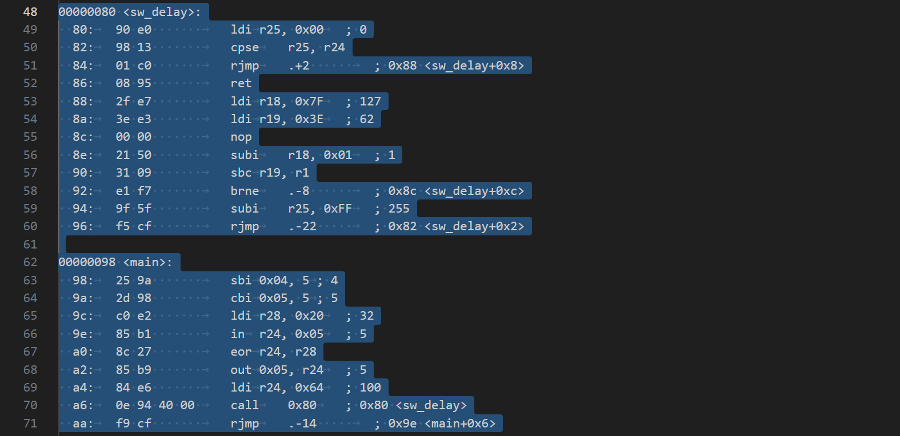
รูป: Disassembler Output
การคอมไพล์โค้ดแบบ Command Line สำหรับผู้ใช้ Ubuntu ให้ทำคำสั่งดังต่อไปนี้
# Update package index
sudo apt update
# Install AVR-GCC toolchain, avr-libc and avrdude
sudo apt install gcc-avr avr-libc avrdude
# Check avr-gcc installation (e.g.avr-gcc GCC 7.3.0)
avr-gcc --version
# Compile C source for ATmega328P (optimize for size)
avr-gcc -mmcu=atmega328p -Os -Wall -o main.elf main.c
# Convert .elf to .hex
avr-objcopy -j .text -j .data -O ihex main.elf main.hex
# Check the check memory usage (Flash, SRAM, EEPROM) of the .elf file
avr-size main.elf
# Disassemble the .elf file
avr-objdump -d main.elf
เมื่อได้ไฟล์ .hex แล้ว ก็สามารถนำไปทดลองใช้กับบอร์ด Arduino ได้ โดยใช้คำสั่ง avrdude
และมีตัวอย่างการทำคำสั่งแบบ Command Line (สำหรับ Linux) ดังนี้
avrdude -c arduino -p m328p -P /dev/ttyACM0 -b 115200 -U flash:w:main.hex
ถัดไปลองเปรียบเทียบกับโค้ด AVR Assembly (main.asm) ที่ทำให้ LED กระพริบ และใช้สำหรับ
AVRASM2 หรือ AVRA มีดังนี้
;-------------------------------------------------
; ATmega328P – Blink PB0 with software delay
; Clock: 16 MHz (external crystal)
;-------------------------------------------------
.include "m328Pdef.inc" ; Device definitions
.cseg
.org 0x0000
rjmp RESET ; Reset vector
RESET:
ldi r16, HIGH(RAMEND) ; Init stack pointer
out SPH, r16
ldi r16, LOW(RAMEND)
out SPL, r16
sbi DDRB, PB5 ; PB5 as output
MAIN:
sbi PORTB, PB5 ; PB5 = HIGH
rcall SW_DELAY
cbi PORTB, PB5 ; PB5 = LOW
rcall SW_DELAY
rjmp MAIN
;-------------------------------------------------
; software delay (approx. 0.5 seconds)
; Uses 16-bit down counter: r25:r24
;-------------------------------------------------
.equ INNER_CNT = 50000 ; 16-bit inner loop
.equ OUTER_CNT = 40 ; outer loop count
SW_DELAY:
ldi r18, OUTER_CNT ; outer loop counter
OUTER_LOOP:
ldi r25, HIGH(INNER_CNT)
ldi r24, LOW(INNER_CNT)
INNER_LOOP:
sbiw r24, 1 ; 2 cycles
brne INNER_LOOP ; 2 cycles if branch taken, otherwise 1 cycle
dec r18 ; 1 cycle
brne OUTER_LOOP ; 2 cycles if branch taken, otherwise 1 cycle
ret ; 4 cycles
ตัวอย่างการทำคำสั่งแบบ Command Line สำหรับ Ubuntu เพื่อคอมไพล์โค้ดและสร้างไฟล์ .hex มีดังนี้
# Install avra
sudo apt install avra
# Check the version
# Output> AVRA: advanced AVR macro assembler (version 1.4.2)
avra --version
# Compile the definition file to the working directory
cp /usr/share/avra/m328Pdef.inc ./m328pdef.inc
# Compile AVR assembly code and generate a .hex file
avra -m atmega328p -o main.hex main.asm
ความสำคัญของซอฟต์แวร์ AVR GCC Toolchain#
ตามที่ได้นำเสนอไป จะเห็นได้ว่า AVR GCC Toolchain มีบทบาทที่สำคัญ และมีองค์ประกอบหลักของซอฟต์แวร์ เช่น
1) avr-gcc (C/C++ Compiler)
- คอมไพเลอร์ภาษา C/C++ สำหรับสถาปัตยกรรม AVR แปลงซอร์สโค้ดเป็นไฟล์ออบเจกต์ (.o)
- รองรับการเขียน Inline Assembly
2) avr-as (GNU Assembler)
- แอสเซมเบลอร์สำหรับโค้ด AVR Assembly ทำหน้าที่แปลงไฟล์ .S / .asm เป็นไฟล์อ็อบเจกต์ (.o)
- ใช้ได้ทั้งกรณีเขียน Assembly ล้วน หรือผสมกับโค้ดภาษา C
3) avr-ld (Linker)
- รวมไฟล์ออบเจกต์หลายไฟล์เข้าด้วยกัน
- จัดวางโค้ดและข้อมูลลงในหน่วยความจำ (Flash / SRAM) ตามผัง Memory Layout ของไมโครคอนโทรลเลอร์
4) avr-objcopy
- แปลงไฟล์เอาต์พุต .elf ให้เป็นไฟล์ Intel HEX (.hex) ซึ่งเป็นไฟล์ที่ใช้สำหรับเขียนลงชิปจริง
5) avr-size
- ดูขนาดโค้ดและการใช้หน่วยความจำ (Flash / SRAM)
6) avr-objdump
- ถอดรหัส Assembly จากไฟล์ .elf
7) avr-libc
- เป็น ลบรารีมาตรฐานสำหรับ AVR
- มีฟังก์ชันพื้นฐาน เช่น การจัดการ I/O การจัดการอินเทอร์รัพท์ (Interrupt) การนิยามชื่อของรีจิสเตอร์ต่าง ๆ ภายใน MCU
▷ การจำลองการทำงานและการดีบัก#
การเขียนโปรแกรมด้วย Bare-metal C และ AVR Assembly สามารถใช้เครื่องมืออย่าง Microchip Studio for AVR หรือ MPLAB X IDE ซึ่งรองรับการจำลองการทำงานของซีพียู (CPU Simulation) ที่มีความถูกต้องในระดับคำสั่งและไซเคิลของซีพียู และการดีบักในระดับคำสั่ง
ผู้เรียนสามารถตรวจสอบได้ทั้ง
- ค่ารีจิสเตอร์ของซีพียู
- หน่วยความจำ SRAM และ Flash
- ลำดับการทำงานของคำสั่ง
- ตัวนับจำนวนไซเคิล (CPU Cycle Count)
- ค่าของตัวแปรในโค้ด
อย่างไรก็ตาม การจำลองลักษณะนี้ยังมีข้อจำกัดเมื่อต้องทำงานร่วมกับอุปกรณ์ภายนอกจริง เช่น การสร้างสัญญาณอินพุตหรือการวิเคราะห์สัญญาณแบบ Waveform
อีกทางเลือกหนึ่งคือ Wokwi Simulator ซึ่งสามารถจำลองการทำงานของระบบ Arduino และ AVR ในรูปแบบที่ใช้งานง่าย ผู้ใช้สามารถเขียนโค้ด คอมไพล์ และทดสอบการทำงานร่วมกับอุปกรณ์พื้นฐานได้อย่างสะดวก
อย่างไรก็ตาม การดีบักโค้ดยังมีข้อจำกัดในเชิงลึก โดยเฉพาะการตรวจสอบการทำงานในระดับรีจิสเตอร์ และคำสั่งของซีพียู แม้ว่า Wokwi จะรองรับการใช้งาน GDB Debugger for AVR ในระดับหนึ่งก็ตาม
▷ กรณีศึกษา: WS2812B RGB LED#
โมดูล WS2812B เป็น RGB LED ที่กำหนดค่าสีด้วยข้อมูล 24 บิต (8 บิตต่อสี: G=Green, R=Read, B=Blue) โดยชิปไมโครคอนโทรลเลอร์ ต้องส่งข้อมูลออกไปทีละบิต ผ่านสายข้อมูลเพียงเส้นเดียว โดยไม่มีสัญญาณนาฬิกา (Clock) แยกต่างหาก สัญญาณที่ใช้เป็นสัญญาณพัลส์ดิจิทัล (Digital Pulse Signal) ซึ่งการตีความค่า 0 หรือ 1 ขึ้นอยู่กับ ความกว้างของพัลส์ (Pulse Width) ที่ต้องแม่นยำตามข้อกำหนดของชิป หากการทำงานในเชิงเวลา (Timing) ไม่ถูกต้อง LED จะอ่านข้อมูลผิดพลาดและแสดงสีไม่ตรงตามที่ต้องการ
สัญญาณ DATA ของ WS2812B เป็นสัญญาณดิจิทัลที่มีลักษณะเป็นพัลส์สลับระหว่างระดับ
HIGH และ LOW
| Bit value | T_H (HIGH) | T_L (LOW) | Total period |
|---|---|---|---|
0 |
0.40 µs (±0.15 µs) | 0.85 µs (±0.15 µs) | ≈ 1.25 µs |
1 |
0.80 µs (±0.15 µs) | 0.45 µs (±0.15 µs) | ≈ 1.25 µs |
อัตราการส่งข้อมูลโดยประมาณ 800 kHz
หลังจากส่งข้อมูลครบ 24 บิตต่อ LED แล้ว หากสัญญาณ DATA เปลี่ยนเป็นระดับ LOW ต่อเนื่องนานกว่าค่าที่กำหนดสำหรับการรีเซต จะถือว่าการส่งข้อมูลสิ้นสุด และนำข้อมูลที่รับได้ไปแสดงผล
| Parameter | Symbol | Typical value |
|---|---|---|
| Reset time | T_RESET | ≥ 50 µs |
แม้ว่าในงานทั่วไปจะนิยมใช้ไลบรารี เช่น FastLED
หรือ Adafruit_NeoPixel
แต่ในระดับล่าง โค้ดที่สร้างสัญญาณเหล่านี้มักถูกเขียนด้วยภาษา AVR Assembly
กรณีนี้จึงเป็นตัวอย่างที่ดีในการเชื่อมโยงความรู้ด้านสถาปัตยกรรมซีพียู การจัดการเวลา และการเขียนโค้ดระดับต่ำเข้าด้วยกัน
ตัวอย่างโค้ด Arduino Sketch เพื่อกำหนดค่าสีของ Single-Pixel WS2812B
ซึ่งใช้ไลบรารี FastLED และเลือกใช้ขา Arduino D11 Pin / PB3 MCU Pin เป็นขาเอาต์พุต
#include <FastLED.h> // This requires the FastLED library.
#define LED_PIN 11 // D11 / PB3 on Arduino Uno
#define NUM_LEDS 1
#define LED_TYPE WS2812
#define COLOR_ORDER GRB
CRGB leds[NUM_LEDS];
void setup() {
FastLED.addLeds<LED_TYPE, LED_PIN, COLOR_ORDER>(leds, NUM_LEDS);
FastLED.clear();
FastLED.show();
}
void loop() {
static uint8_t g = 255, r = 0, b = 0;
leds[0] = CRGB(r, g, b); // Assign a new CRGB object
FastLED.show(); // Update the WS2812B color
delay(1000);
// Rotate colors
uint8_t tmp = g;
g = r;
r = b;
b = tmp;
}
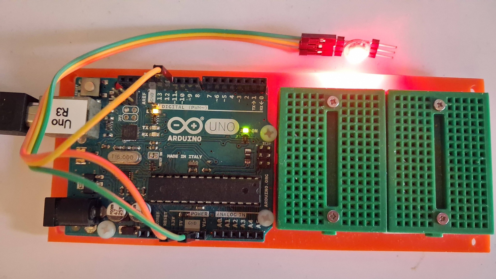
รูป: Arduino Uno Rev.3 + WS2812B Module
ลองเปรียบเทียบกับโค้ดภาษา C ต่อไปนี้ ซึ่งจะเห็นได้ว่า มีการเขียนโค้ด
ภายในฟังก์ชัน ws2812_send_byte(uint8_t data)
ด้วย Inline AVR Assembly ซึ่งทำหน้าที่สร้างสัญญาณดิจิทัลสำหรับโมดูล WS2812B
#ifndef F_CPU
#define F_CPU 16000000UL
#endif
#include <avr/io.h>
#include <avr/interrupt.h>
#include <util/delay.h>
#define WS2812_PIN 3 // PB3 (Arduino D11)
#define WS2812_PORT PORTB
#define WS2812_DDR DDRB
// Send one byte to WS2812 (MSB first)
static inline void ws2812_send_byte(uint8_t data) {
asm volatile (
"ldi r19, 8 \n" // 8 bits
"1: \n"
"lsl %[data] \n" // logical shift left: C <- MSB
"brcs 2f \n" // brach to 2 (forward) if C=1
// send '0'
"sbi %[port], %[pin] \n" // set bit (HIGH)
"nop \n"
"nop \n"
"nop \n"
"cbi %[port], %[pin] \n" // clear bit (LOW)
"nop \n"
"nop \n"
"nop \n"
"nop \n"
"nop \n"
"nop \n"
"rjmp 3f \n" // jump to 3 (forward)
// send '1'
"2: \n"
"sbi %[port], %[pin] \n" // set bit (HIGH)
"nop \n"
"nop \n"
"nop \n"
"nop \n"
"nop \n"
"nop \n"
"nop \n"
"nop \n"
"nop \n"
"nop \n"
"cbi %[port], %[pin] \n" // clear bit (LOW)
"3: \n"
"dec r19 \n"
"brne 1b \n" // branch to 1 (backward) if Z=0
:
: [data] "r" (data),
[port] "I" (_SFR_IO_ADDR(WS2812_PORT)),
[pin] "I" (WS2812_PIN)
: "r19"
);
}
// Set the GRB color to WS2812B
void ws2812_set_color(uint8_t g, uint8_t r, uint8_t b) {
cli(); // disable interrupts
ws2812_send_byte(g); // Green
ws2812_send_byte(r); // Red
ws2812_send_byte(b); // Blue
sei(); // enable interrupts
}
int main(void) {
uint8_t g = 255, r = 0, b = 0;
// Configure PB3 as output
WS2812_DDR |= (1 << WS2812_PIN);
WS2812_PORT &= ~(1 << WS2812_PIN);
while (1) {
ws2812_set_color(g, r, b);
// Rotate colors: G -> R -> B
uint8_t tmp = g;
g = r;
r = b;
b = tmp;
_delay_ms(500);
}
}
การเลือกเขียนโค้ดด้วย AVR Assembly แทนการใช้ภาษา C ก็มีวัตถุประสงค์ เพื่อการควบคุมเวลาในระดับไซเคิล (Clock Cycle) ซึ่งเป็นข้อกำหนดโดยตรงของโปรโตคอล WS2812B
การส่งข้อมูลไปยัง WS2812B เป็นการสร้างสัญญาณพัลส์ ที่ความกว้างของช่วง HIGH และ LOW ต้องอยู่ในช่วงที่กำหนดอย่างเคร่งครัด ความคลาดเคลื่อนในเชิง Timing อาจทำให้ LED ได้รับข้อมูลบิตที่ผิดพลาดได้
ในระดับ Assembly สามารถกำหนดรูปแบบสัญญาณได้โดยตรง
เริ่มจากใช้คำสั่ง sbi เพื่อเซตบิตของพอร์ตเอาต์พุต (เช่น PORTB, PB5) ให้เป็น HIGH
จากนั้นแทรกคำสั่ง nop ตามจำนวนที่คำนวณจากความถี่สัญญาณนาฬิกา
เพื่อสร้างความกว้างพัลส์ในช่วงเวลาที่ต้องการ และจบด้วยคำสั่ง cbi เพื่อลดระดับสัญญาณกลับเป็น LOW
แนวทางนี้ทำให้จำนวนไซเคิล ของแต่ละช่วงเวลาถูกกำหนดอย่างแน่นอน จึงเหมาะสำหรับงานที่มีลักษณะเป็น Timing-critical อย่างการควบคุม WS2812B
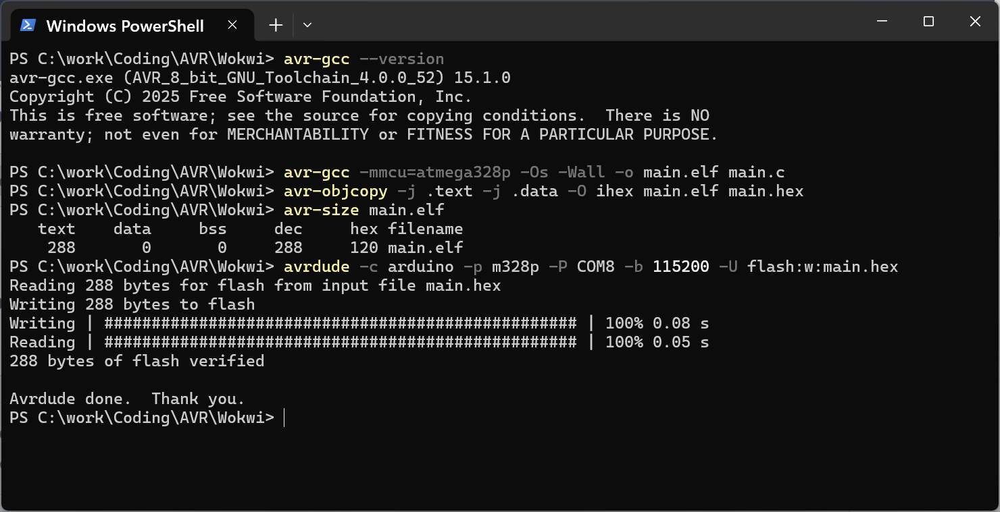
รูป: ตัวอย่างการทำคำสั่งแบบ Command line สำหรับระบบปฏิบัติการ Windows เพื่อคอมไพล์และอัปโหลดโปรแกรมไปยังบอร์ด Arduino
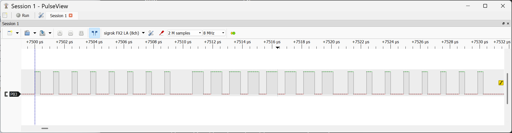
รูป: ตัวอย่างการวัดสัญญาณเอาต์พุตด้วย USB Logic Analyzer + PulseView ที่แสดงให้เห็นสัญญาณพัลส์ที่เกิดขึ้น สำหรับการส่งข้อมูล 3 ไบต์ ไปยังโมดูล WS2812B
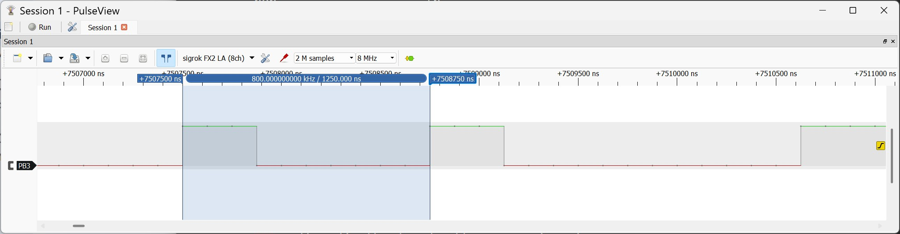
รูป: ความกว้างของสัญญาณ เมื่อบิตมีค่าเป็น 0 ซึ่งวัดได้ประมาณ 1.25 us
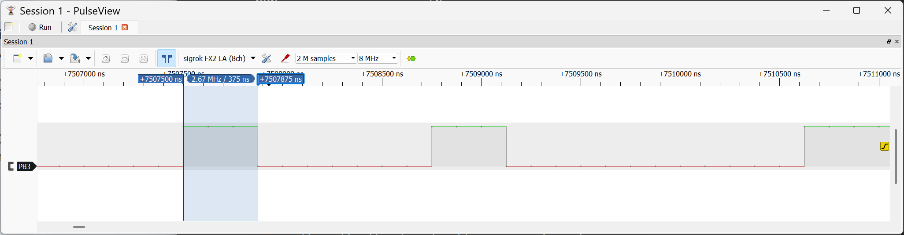
รูป: ความกว้างช่วงที่เป็น LOW เมื่อบิตมีค่าเป็น 1 ซึ่งวัดได้ประมาณ 0.375 us
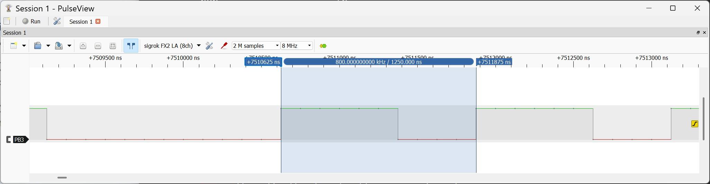
รูป: ความกว้างของสัญญาณ เมื่อบิตมีค่าเป็น 1 ซึ่งวัดได้ประมาณ 1.25 us
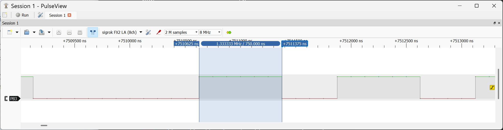
รูป: ความกว้างช่วงที่เป็น HIGH เมื่อบิตมีค่าเป็น 1 ซึ่งวัดได้ประมาณ 0.75 us
ถัดไป ลองมาดูตัวอย่างรูปแบบการเขียนโค้ด AVR Assembly ทั้งหมด และใช้คำสั่ง avr-gcc ในการคอมไพล์โค้ด
#define __SFR_OFFSET 0
#include <avr/io.h> // Get the "basic" symbolic names for registers
#define WS2812_PIN 3
.text
.global main
main:
; Initialize stack pointer
ldi r16, hi8(RAMEND)
out SPH, r16
ldi r16, lo8(RAMEND)
out SPL, r16
; PB3 output
sbi DDRB, WS2812_PIN
cbi PORTB, WS2812_PIN
; Initial color: G=255, R=0, B=0
ldi r20, 255 /* G */
clr r21 /* R */
clr r22 /* B */
main_loop:
cli
rcall send_grb
sei
rcall sw_delay
; Rotate colors
mov r23, r20
mov r20, r21
mov r21, r22
mov r22, r23
rjmp main_loop
; send_grb: send G, R, B (r20, r21, r22)
send_grb:
mov r24, r20
rcall send_byte
mov r24, r21
rcall send_byte
mov r24, r22
rcall send_byte
ret
; send_byte: send 8 bits MSB-first (r24)
send_byte:
ldi r25, 8
send_bit:
sbi PORTB, WS2812_PIN
lsl r24
brcs send_1
send_0:
nop
nop
cbi PORTB, WS2812_PIN
nop
nop
nop
nop
nop
nop
rjmp send_bit_done
send_1:
nop
nop
nop
nop
nop
nop
nop
cbi PORTB, WS2812_PIN
nop
nop
send_bit_done:
dec r25
brne send_bit
ret
; sw_delay
sw_delay:
ldi r18, 20 ; set outer loop count
delay_outer:
ldi r25, hi8(50000) ; load r25:24 with 50000 (iterations)
ldi r24, lo8(50000)
delay_inner:
sbiw r24, 1 ; decrement r25:r24 (inner loop counter)
brne delay_inner ; repeat inner loop if not zero
dec r18 ; decrement r18 (outer loop counter)
brne delay_outer ; repeat outer loop if not zero
ret ; return from subroutine
ตัวอย่างการทำคำสั่งสำหรับ Windows
avr-gcc -mmcu=atmega328p -DF_CPU=16000000UL -Os main.S -o main.elf
avr-objcopy -O ihex main.elf main.hex
avrdude -c arduino -p m328p -P COM8 -b 115200 -U flash:w:main.hex
▷ การจำลองการทำงานแบบเสมือนจริงด้วย Wokwi Simulator + VS Code IDE#
ถัดไปเป็นตัวอย่างการจำลองการทำงานด้วย VS Code IDE ร่วมกับ Wokwi Simulator Extension
ไฟล์ที่ต้องใช้ในการจำลองการทำงานตามตัวอย่าง ได้แก่
wokwi.toml(ต้องสร้างขึ้นใหม่ ตามตัวอย่าง เพื่อใช้ระบุว่า จะใช้ไฟล์ใดในการรัน)diagram.json(ต้องวาดผังวงจรด้วย Wokwi Simulator แบบ online แล้วนำไฟล์มาใช้)main.elfและmain.hex(ได้จากขั้นตอนการคอมไพล์โค้ดด้วยavr-gcc)
File: diagram.json
{
"version": 1,
"author": "Anonymous Maker",
"editor": "wokwi",
"parts": [
{ "type": "wokwi-arduino-uno", "id": "uno", "top": 0,
"left": 0, "attrs": {} },
{ "type": "wokwi-neopixel", "id": "rgb1", "top": -30,
"left": 300, "attrs": {} },
{ "type": "wokwi-logic-analyzer", "id": "logic1",
"top": -90, "left": 380, "attrs": {} }
],
"connections": [
[ "uno:5V", "rgb1:VDD", "red", [ "v30", "h125", "v-250", "h30" ] ],
[ "uno:GND.1", "rgb1:VSS", "black", [ "v-70", "h240", "v50" ] ],
[ "uno:11", "rgb1:DIN", "green", [ "v-60", "h190" ] ],
[ "logic1:GND", "rgb1:VSS", "black", [ "h-20", "v20", "h-20" ] ],
[ "logic1:D0", "rgb1:DIN", "orange", [ "h-50", "v80" ] ]
],
"dependencies": {}
}
File: wokwi.toml
[wokwi]
version = 1
firmware = 'main.hex'
elf = 'main.elf'
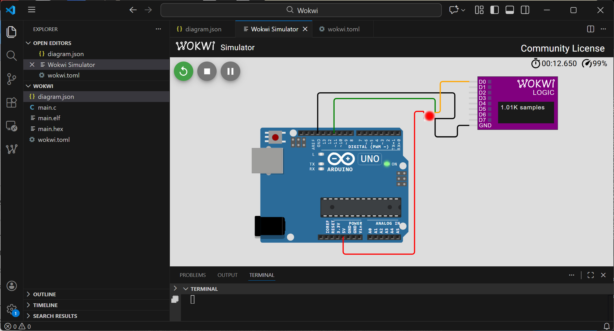
รูป: ตัวอย่างการจำลองการทำงานของบอร์ด Arduino Uno + WS2812B เสมือนจริง
จากรูปผังวงจร จะเห็นได้ว่า มีการวัดสัญญาณด้วย Virtual 8-channel Logic Analyzer
เมื่อหยุดการจำลองการทำงาน จะได้ไฟล์ wokwi-logic.vcd และสามารถนำไปเปิดและแสดงรูปคลื่นสัญญาณได้
โดยใช้โปรแกรม เช่น Surfer หรือ GTkWave
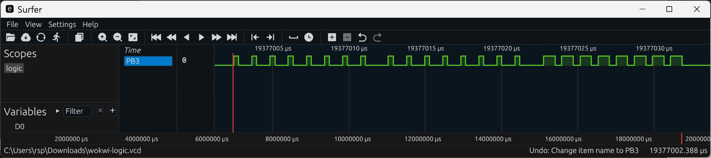
รูป: ตัวอย่างการแสดงรูปคลื่นสัญญาณจากไฟล์ wokwi-logic.vcd ด้วยโปรแกรม Surfer
▷ ข้อจำกัดของ Arduino API#
แม้ว่า Arduino API จะสะดวกและเหมาะสำหรับการเริ่มต้น
แต่ไม่สามารถเข้าถึงความสามารถเต็มของไมโครคอนโทรลเลอร์
ATmega328P ได้ทั้งหมด ตัวอย่างเช่น ฟังก์ชัน analogWrite()
- ใช้สำหรับสร้างสัญญาณ PWM (Pulse Width Modulation) เป็นเอาต์พุต
- จะต้องเลือกใช้ขาที่รองรับ PWM ซึ่งบน Arduino Uno (ATmega328P) มี 6 ขา PWM
ได้แก่
D3,D5,D6,D9,D10และD11 - Arduino API ได้กำหนดความถี่ของ PWM ไว้คงที่สำหรับ Arduino Uno / Nano
เมื่อใช้ฟังก์ชัน
analogWrite()สำหรับแต่ละขา (โดยขึ้นอยู่กับวงจร Timer ที่ใช้) ไม่สามารถปรับความถี่ได้โดยตรง- Timer0 (8-bit): ขา D5, D6 ความถี่ 976 Hz
- Timer2 (16-bit): ขา D3, D11 ความถี่ 490 Hz
- Timer1 (8-bit): ขา D9, D10 ความถี่ 490 Hz
หากต้องการปรับความถี่ของสัญญาณเอาต์พุต PWM หรือเปลี่ยนรูปแบบ (โหมด) การทำงานของ Timer หรือ กำหนดรูปแบบการทำงานด้วยอินเทอร์รัพท์ จำเป็นต้องเข้าถึงรีจิสเตอร์ของ Timer โดยตรง เช่น
TCCR0A,TCCR0Bสำหรับ Timer0TCCR1A,TCCR1Bสำหรับ Timer1TCCR2A,TCCR2Bสำหรับ Timer2
ฟังก์ชันของ Arduino (ATmega328P) เกี่ยวกับเวลา เช่น
delay(), delayMicroseconds() และ millis() ทำงานอ้างอิงกับ Timer0
- ถูกตั้งค่าให้ทำงานในโหมด Fast PWM มีการเปิดใช้งาน Timer0 Overflow Interrupt (TOV0) เพื่อให้การทำงานของ Arduino คำนวณและนับเวลาภายใน
- มีคาบเวลา (Tick Period) 4 ไมโครวินาที (ความถี่ 16 MHz หารด้วยค่า Prescaler=64 ได้ความถี่ 250kHz หรือคิดเป็น 4 us)
ตัวอย่างโค้ด Arduino Sketch สร้างสัญญาณ PWM ทั้ง 6 ขา และกำหนดค่า Duty Cycle = 50% (ความละเอียด 8 บิตในการกำหนดค่า) มีดังนี้
// Pin definitions for Arduino Uno PWM outputs
const int pwmPins[] = {3, 5, 6, 9, 10, 11};
void setup() {
// Set all PWM pins as OUTPUT
for (int i = 0; i < 6; i++) {
pinMode( pwmPins[i], OUTPUT );
}
// Set all PWM outputs to 50% duty cycle
// analogWrite range: 0-255 (50% = 128)
for (int i=0; i < 6; i++) {
analogWrite( pwmPins[i], 128 ); // 50% duty cycle
}
}
void loop() {
}
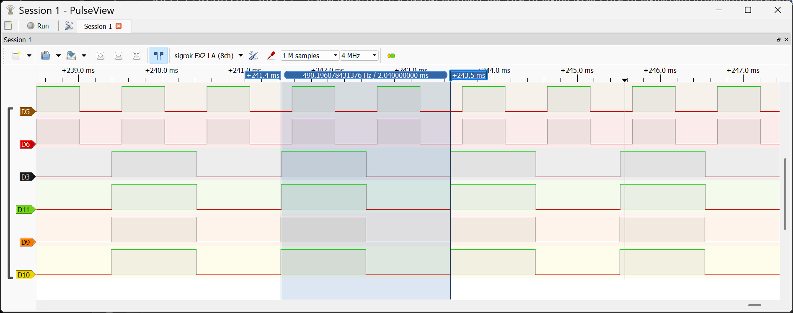 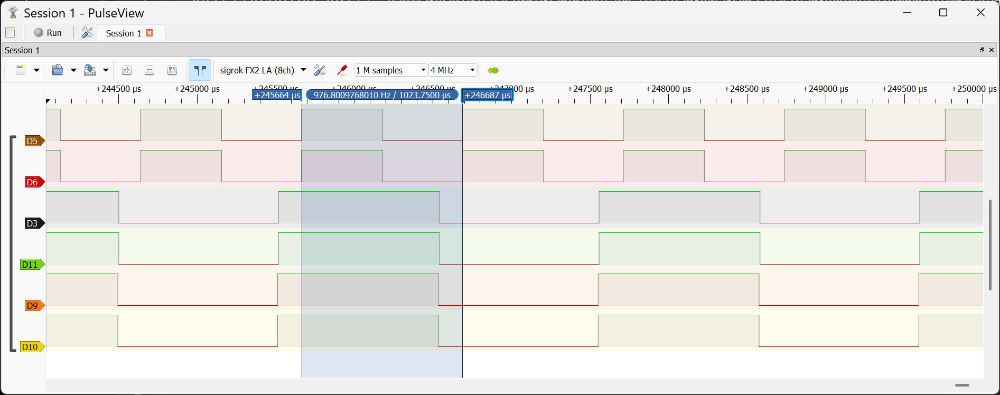
รูป: ตัวอย่างการวัดสัญญาณเอาต์พุต PWM ทั้งหมด 6 ขา
ตัวอย่างถัดไปเป็นโค้ด Arduino Sketch ที่เปิดการใช้งานวงจร Timer 1 (16-bit) ในโหมดที่เรียกว่า CTC (Clear Timer on Compare Match)
const int LED_PIN = 13; // Arduino D13 pin for onboard LED
volatile bool ledState = false;
void initTimer1() {
// Stop Timer1
TCCR1A = 0;
TCCR1B = 0;
// f_CPU = 16 MHz, Prescaler = 64 => Timer tick = 4 us
// Set prescaler to 64 and use CTC mode (Clear Timer on Compare Match)
TCCR1B |= (1 << CS11) | (1 << CS10);
TCCR1B |= (1 << WGM12);
// Set Timer1 Compare Match register for 1 ms interrupt:
// OCR1A = (1ms / 4us) - 1 = 249
OCR1A = 249;
// Enable Timer1 compare interrupt
TIMSK1 |= (1 << OCIE1A);
// Enable global interrupts
sei();
}
void setup() {
pinMode(LED_PIN, OUTPUT);
digitalWrite(LED_PIN, LOW);
initTimer1();
}
void loop() {
}
// Timer1 compare match interrupt service routine
ISR(TIMER1_COMPA_vect) {
ledState = !ledState; // toggle LED state
digitalWrite(LED_PIN, ledState); // apply new state
}
รีจิสเตอร์ของตัวนับที่เกี่ยวข้อง คือ TCNT1 (Timer/Counter 1 Register)
มีการกำหนดอัตราการนับของ Timer 1 คือ 16 MHz / 64 (prescaler) = 250 kHz
หรือเกิด Timer Tick ทุก ๆ 4 us
เริ่มนับจาก 0 เพิ่มขึ้นทีละ 1 ทุก ๆ 4 us ไปจนถึงค่าที่กำหนดไว้ในรีจิสเตอร์ OCR1A (ตั้งค่าไว้ 249)
จะเกิดเหตุการณ์ Compare Match Event แล้วกลับไปเริ่มต้นที่ 0 ใหม่
และทำให้เกิดอินเทอร์รัพท์ ในแต่ละรอบจะใช้เวลาเท่ากับ 250 x 4 usec = 1 msec
ชื่อฟังก์ชัน ISR ตามรูปแบบที่กำหนดไว้โดย AVR GCC lib C
สำหรับ Compare Match Timer1 คือ TIMER1_COMPA_vect
ฟังก์ชันนี้ จะทำงานทุกครั้งที่เกิดเหตุการณ์ Compare Match
และในตัวอย่างนี้ ทำหน้าที่สลับสถานะ LED ที่ขา Arduino D13
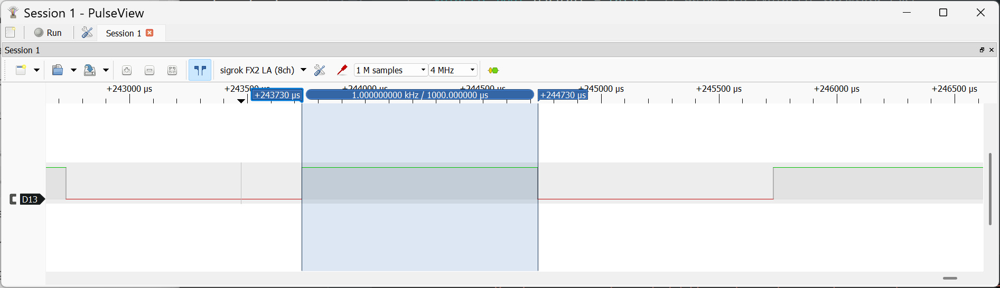
รูป: ตัวอย่างการวัดสัญญาณเอาต์พุต (มีความกว้างพัลส์เท่ากับ 1 ms)
▷ ตัวอย่างการเขียนโค้ดโดยใช้ FreeRTOS#
รูปแบบการเขียนโค้ดสำหรับไมโครคอนโทรลเลอร์ที่สำคัญอีกรูปแบบหนึ่ง คือ การพัฒนาโปรแกรมด้วย ระบบปฏิบัติการเวลาจริง (RTOS: Real-Time Operating System)
แม้ว่าชิป ATmega328P บนบอร์ด Arduino Uno / Nano จะมีข้อจำกัดด้านขนาดหน่วยความจำและทรัพยากรของระบบ แต่ก็ยังสามารถนำมาใช้เป็นสื่อการเรียนรู้เพื่อทดลองแนวคิดของ RTOS ได้ เช่น การเขียนโปรแกรมแบบ มัลติทาสก์ การกำหนด ระดับความสำคัญของทาสก์ (Task Priority) รวมถึงการทำความเข้าใจกลไกการสลับบริบทการทำงาน (Context Switching) การสื่อสารและรอจังหวะระหว่างทาสก์ ซึ่งเป็นแนวคิดพื้นฐานที่สำคัญของการพัฒนาโปรแกรมด้วย RTOS โดยมีตัวเลือกอย่างเช่น FreeRTOS ซึ่งมีการใช้งานแพร่หลาย
การใช้งาน RTOS บนไมโครคอนโทรลเลอร์ขนาดเล็กอย่าง AVR คงเหมาะสำหรับการศึกษาแนวคิดและโครงสร้างของระบบ มากกว่าการนำไปใช้ในงานจริงที่ต้องการประสิทธิภาพหรือความเสถียรสูง
#include <Arduino_FreeRTOS.h> // FreeRTOS port for Arduino AVR
#include <queue.h> // for FreeRTOS queue
#define LED_PIN 13
#define BUTTON_PIN 2 // External interrupt 0 (INT0)
const TickType_t minPulse = pdMS_TO_TICKS(50);
QueueHandle_t queue;
volatile uint16_t blinkDelayMs = 100;
/* Button Pulse ISR */
void buttonISR() {
static TickType_t startTick = 0;
static uint8_t validClickCount = 0;
if (digitalRead(BUTTON_PIN) == LOW) {
// FALLING edge: start of LOW pulse
startTick = xTaskGetTickCountFromISR();
} else {
// RISING edge: end of LOW pulse
if (xTaskGetTickCountFromISR() - startTick >= minPulse) {
validClickCount++;
xQueueSendFromISR(queue, &validClickCount, NULL);
}
}
}
void TaskBlink(void *pvParameters) {
(void) pvParameters;
uint8_t state = 0;
pinMode(LED_PIN, OUTPUT);
for (;;) {
digitalWrite(LED_PIN, state ^= 1);
vTaskDelay(pdMS_TO_TICKS(blinkDelayMs));
}
}
void TaskButton(void *pvParameters) {
(void) pvParameters;
uint8_t clickCount = 0;
for (;;) {
if (xQueueReceive(queue, &clickCount, portMAX_DELAY) == pdPASS) {
blinkDelayMs = (clickCount & 1) ? 500 : 100;
Serial.print( "Button event count: " );
Serial.println( clickCount );
}
}
}
void setup() {
Serial.begin(115200);
pinMode(BUTTON_PIN, INPUT_PULLUP);
char sbuf[32];
Serial.println( F("\n\nArduino Uno + FreeRTOS Demo") );
snprintf( sbuf, 32, "FreeRTOS v%d.%d.%d",
tskKERNEL_VERSION_MAJOR,
tskKERNEL_VERSION_MINOR,
tskKERNEL_VERSION_BUILD );
Serial.println( sbuf );
snprintf( sbuf, 32, "portTICK_PERIOD_MS: %d",
portTICK_PERIOD_MS );
Serial.println( sbuf );
queue = xQueueCreate(1, sizeof(uint8_t));
attachInterrupt( digitalPinToInterrupt(BUTTON_PIN),
buttonISR, CHANGE /*any edge*/ );
xTaskCreate( TaskBlink /*task function*/, "Blink" /*task name*/,
128 /*stack size*/, NULL, 1 /*task priority*/, NULL );
xTaskCreate( TaskButton /*task function*/, "Button" /*task name*/,
128 /*stack Size*/, NULL, 2 /*task priority*/, NULL );
// vTaskStartScheduler();
}
void loop() {
}
โค้ดตัวอย่างนี้สาธิตการเขียนโค้ด Arduino Uno ที่ทำงานร่วมกับ FreeRTOS แสดงแนวคิดสำคัญของการเขียนโปรแกรมแบบมัลติทาสก์ ระบบใช้ External Interrupt (INT0) ตรวจจับการกดปุ่ม และใช้ตัวนับเวลาของ FreeRTOS วัดความกว้างของพัลส์สัญญาณระดับ LOW เพื่อคัดกรองเฉพาะการกดที่ถูกต้อง ลดผลกระทบจากการเด้งของปุ่ม (Debouncing) จากนั้นฟังก์ชันที่ทำหน้าที่เป็น ISR (Interrupt Service Routine) จะส่งเหตุการณ์ไปยังทาสก์ด้วย FreeRTOS Queue ซึ่งเป็นวิธีที่เหมาะสมในการสื่อสารระหว่าง ISR กับทาสก์
ทาสก์ TaskButton ทำหน้าที่รอรับเหตุการณ์จาก Queue
แล้วใช้ในการเปลี่ยนความเร็วการกระพริบ LED ระหว่างช้ากับเร็ส
ส่วนทาสก์ TaskBlink เป็นทาสก์แบบคาบเวลา ใช้ vTaskDelay() แทน delay()
เพื่อไม่บล็อกการทำงานของทาสก์อื่น
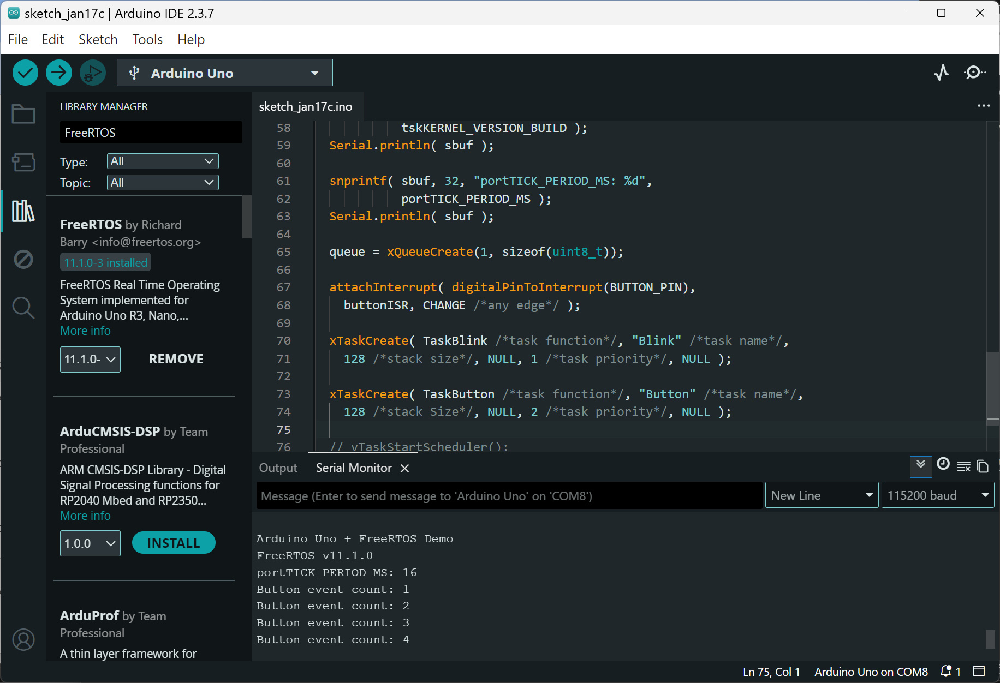
รูป: ตัวอย่างการเขียน Arduino Sketch ที่มีการใช้งานไลบรารี FreeRTOS port for AVR (v11.1.0)
▷ กล่าวสรุป#
แม้ไมโครคอนโทรลเลอร์แบบ 8 บิต จะมีบทบาทลดลงในเชิงการใช้งานจริง แต่ยังคงมีคุณค่าอย่างยิ่ง ในฐานะแพลตฟอร์มสำหรับการเรียนรู้ โดยเฉพาะการทำความเข้าใจพื้นฐานของระบบคอมพิวเตอร์ฝังตัว และสถาปัตยกรรมซีพียู
บอร์ด Arduino Uno / Nano และชิป ATmega328P สามารถทำหน้าที่เป็น "โมเดล" สำหรับการเรียนรู้ตั้งแต่ระดับ Arduino API ไปจนถึงระดับ Assembly ได้อย่างครบถ้วน
อย่างไรก็ตาม การจัดการเรียนการสอนไม่ควรจำกัดอยู่เพียงแพลตฟอร์มเดียว ผู้เรียนควรมีโอกาสต่อยอดไปสู่ไมโครคอนโทรลเลอร์แบบ 32 บิตในแนวคิดเดียวกัน เพื่อให้สอดคล้องกับเทคโนโลยีและการใช้งานในปัจจุบันและอนาคต
This work is licensed under a Creative Commons Attribution-ShareAlike 4.0 International License.
Created: 2026-01-15 | Last Updated: 2026-01-17